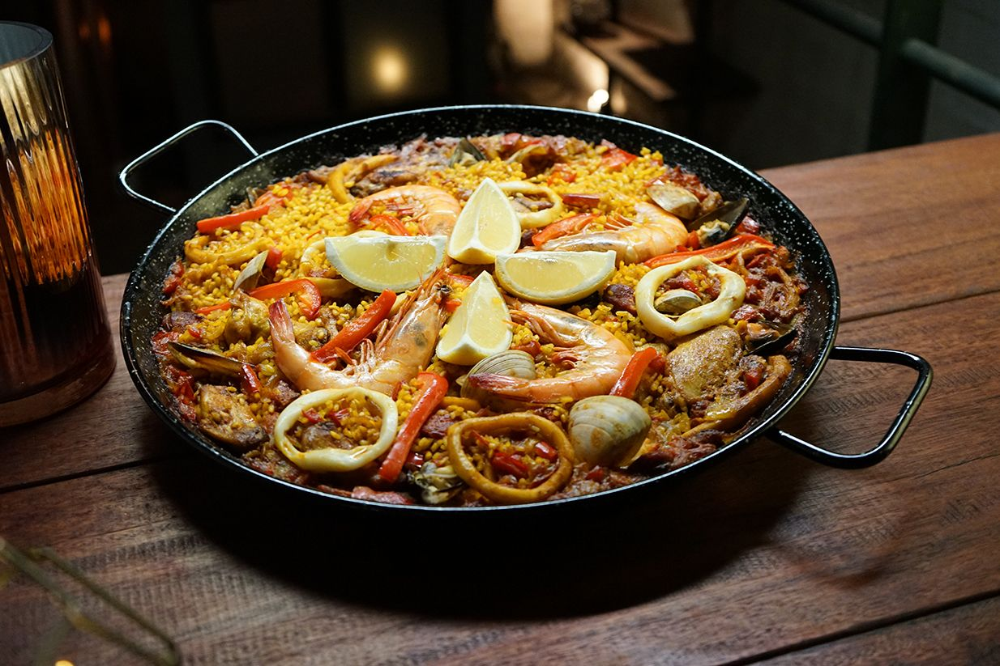
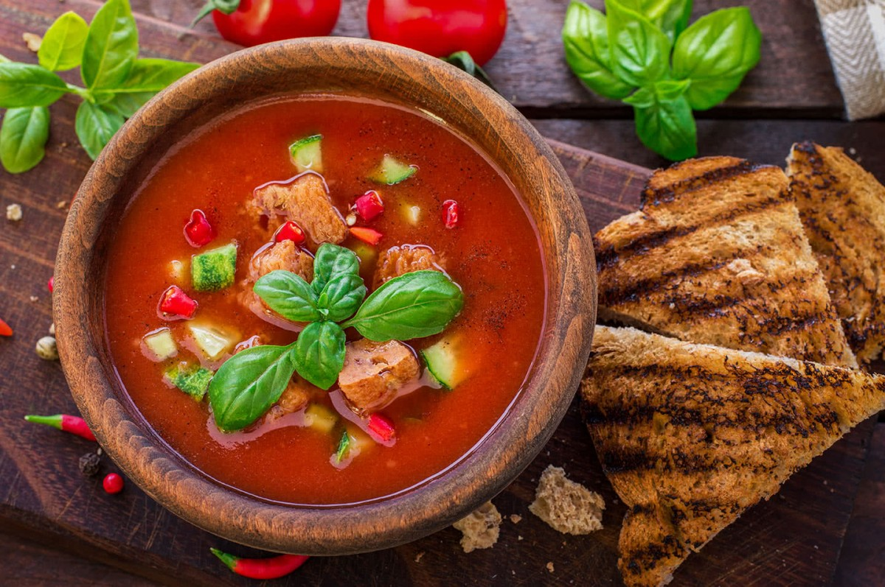
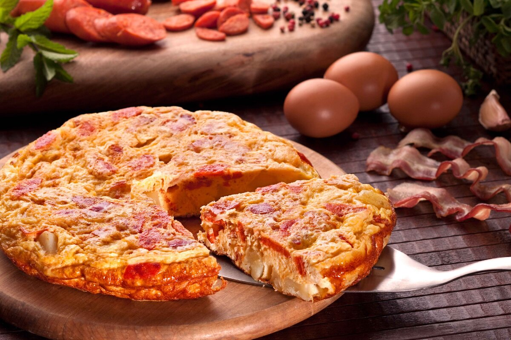
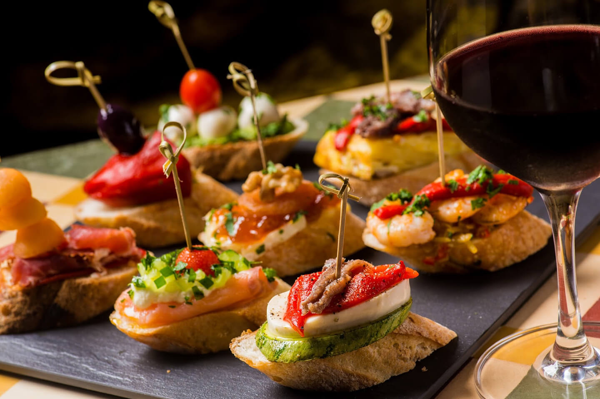
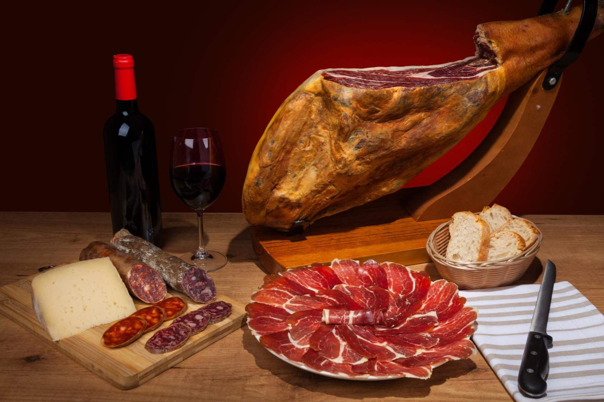

Паэлья - это блюдо является национальной гордостью страны. Как говорят испанцы, существует свыше 300 рецептов паэльи. Основным ее составляющим является рис с шафраном. Паэлья может быть с овощами, мясом, морепродуктами, кроликом или курицей. Традиционно она готовится на улице в большой сковороде. Делать это могут только мужчины.
Гаспачо - это холодный или горячий томатный суп, который относится к кухне Андалусии. Но гаспачо это еще и салат, и даже тушеное блюдо. Традиционно для его приготовления нужны помидоры, лук, огурец, чеснок. Заправляют оливковым маслом, винным уксусом и солью. В некоторых случаях добавляют ветчину.
Тортилья эспаньола еще одно популярное блюдо, которое имеет огромное число вариаций. Это испанский омлет, в состав которого обязательно входят куриные яйца, картофель, лук, соль и перец. Он может быть тонким или толстым, мягким или твердым. Все его варианты популярны.
Тапас - традиционная закуска, которая обязательно подается в барах к пиву и алкогольным напиткам. В некоторых городах (Мадриде, Барселоне) предложат тапас бесплатно, но кое-где за него придется заплатить.Испанцы готовы есть его днем и ночью независимо от того, что же им подали — сыр, миндаль, сэндвичи или овощи гриль. Поэтому здесь говорят, что если не попробовал тапас — значит не побывал в Испании.
Хамон еще один «десерт» — сыровяленый окорок, хамон. Существует два вида хамона — серрано и иберико. Это очень вкусное мясо, которое является визитной карточкой страны.
